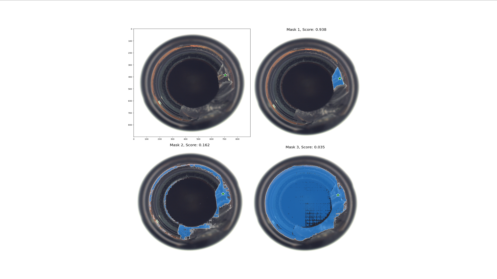
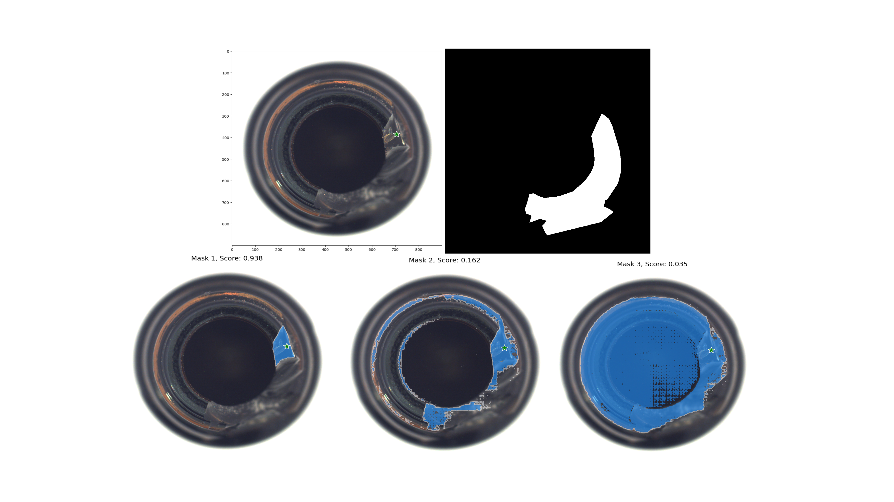

Good Segmentation, High Confidence - Bottle
Good Segmentation, High Confidence - Bottle
SAM correctly identifies and segments the anomaly with high
confidence, showing its potential when anomalies have clear
boundaries and distinct features from the background.

Poor Segmentation, High Confidence - Carpet
SAM incorrectly segments the anomaly while expressing high
confidence, demonstrating how misleading confidence scores can
be for textured surfaces where anomalies have subtle differences
from the background pattern.

Good Segmentation, Low Confidence - Hazelnut
SAM accurately detects the anomaly but with low confidence,
showing how even correct predictions can be uncertain,
suggesting potential for performance improvement through
confidence calibration.

Poor Segmentation, Low Confidence - Plate